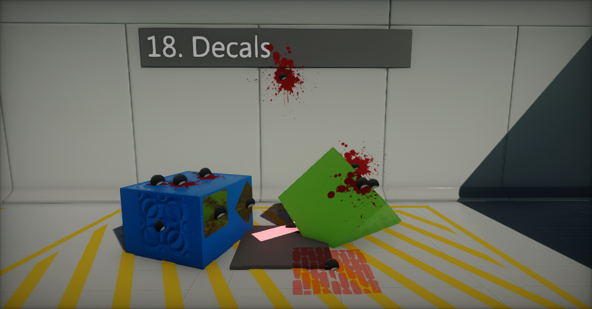

Flax 0.1 release notes
Highlights
Decals

We've added a new material type: Decal and new Decal Actor which can be used to draw decal materials on top of the surface of the scene geometry. It's a very common and easy way to add special effects like blood drops, footsteps or more. Draw calls rendering is very optimized and fits needs of most of the games. To learn more about decals see the related documentation here.
C# 7.2 support
Now you can use the newest C# 7.2 features including:
- local functions
- binary literals
- digit separators
- pattern matching
outvariables- expression bodied members
ref readonlyprivate protected- and more...
The current Flax version includes Roslyn compiler and supports using the newest C# language version in your scripts.
Games UI
New UICanvas and UIControl actor types enable game developers to create easily UI for game menus, player HUD and other level interfaces like control panels. User Interface can be created from code or right inside the editor with full serialization and undo support.
Editor Options
Now you can modify the editor options and keep the globally for all installed engine instanced. You can adjust scripts recompilation logic, change the interface, modify the selection outline colors and more.
Changelog
Version 0.1.6163 - 14 July 2018
Contributors: stefnotch, Sauler
- Add IndirectLightingIntensity parameter to lights and to the scene setting (global)
- Add
StaticModel.HiddenShadowfor rendering only model shadow - Add
StaticModel.BoundsScalefor scale its bounds - Add
Bordercontrol - Add
BlurPanelfor blurring GUI background with Gaussian blur - Add GUI material preview in Editor
- Add
Mesh.UpdateTriangles - Add
ShowInEditorattribute to display object private fields/properties in editor - Add more styling options to GUI controls
- Add
SolidColorBrush,LinearGradientBrushandMaterialBrush - Add support for rendering text in GUI with a custom material
- Add support for masking GUI materials
- Add CSG.Model to Scene for CSG geometry rendering (exposed)
- Add events
Collider.TriggerEnterandCollider.TriggerExit - Add renaming selected actor with
F2key (via scene tree) - Add arrow Keys & Enter to choose an autocomplete suggestion in Visject
- Add alternative names for nodes (
*for multiply,+for add, etc.) in Visject - Add auto connecting selected nodes in Visject when new node is added
- Add adding new Visject nodes to selection
- Rename
IImageSourcetoIBrush(and related symbols) - Remove
ViewFlags.CSG - Move
Tree,TreeNode,ContextMenu,ComboBox, andValueBoxcontrol types to Editor assembly - Fix sampling directional light shadow map cascades for volumetric fog scattering
- Fix texture mip data downloading
- Fix focus in Visject on node creation
- Fix Debug Window messages count button size
- Fix expanding tree nodes in some cases
- Fix for missing reference in FlaxObjectRefEditor
- Fix World Position sampling in GUI material types
- Fix control location constraint for Anchor Style set to Center
- Fix main thread stall when loading scene in async
- Fix crash when renaming actor during scripts reload
- Minor fixes
Version 0.1.6162 - 2 July 2018
- Add support for DirectX profile events
- Fix rendering on Intel GPUs
- Fix dynamic models bounds updating
- Fix various memory leaks
- Fix
VerticalPanellayout
Version 0.1.6161 - 1 July 2018
- Added support for importing
.hdrfiles - Added support for exporting assets in Editor (textures, sprite atlases, cube textures, audio clips, models and skinned models)
- Added support for virtual texture assets (with updating from code)
- Added support for saving textures to file (in Editor)
- Added API to get texture mip data
- Added more C# API for creating models with custom LODs from code
- Added support for virtual skinned models creating from code
- Added support for updating skinned model properties at runtime
- Added support for editing material slots collection for Model/SkinnedModel
- Added support for saving Model/SkinnedModel to other asset and saving generated geometry to the file (in Editor)
- Added support for downloading vertex and index buffers data from the Mesh/SkinnedMesh (from GPU or from memory/drive)
- Added
Mesh.HasVertexColors,Mesh.HasLightmapUVsandMesh.IndexBufferFormat - Added
Int4type - Added
DebugDraw.DrawArrow - Added support for uploading mesh data from the other threads
- Added
MessageBox.BrowseFolderDialog - Added
AllowUnsafeCodefor projects template - Added drawing arrow with selected directional/spot light direction in Editor
- Fix node values types for Surface copy paste
- Fix project regenerate on script change
- Fix import file dialog list
Version 0.1.6160 - 27 June 2018
- Added UICanvas and UIControl actor types for building Game UI systems
- Added texture import option Flip Y
- Added support for global custom PostFx applied to all game scene viewports
- Added using position snapping when spawning the object via drag and drop
- Added C# API to get GPU memory usage and dump resources info to log
- Added
RenderBuffers.DepthBufferto be accessed from the C# API - Added new attribute
VisibleIfto show/hide properties in editor based on object state - Added creating mesh from code with 16bit index buffer
- Added new PostFx Material rendering location:
BeforeReflectionsPass, can be used to implement custom light types and extend the shading pipeline - Added
PostProcessEffect.Locationthat specifies location during frame rendering when to execute the custom postFx - Added
PostProcessEffect.UseSingleTargetthat allows to render graphics in additive mode to the input texture (can be used to optimize game performance) - Added
PostProcessEffect.Orderthat allows to sort the effects - Added new PostFx location
AfterAntiAliasingPassfor PostFx Materials and Custom PostFx, can be used to perform rendering after full-screen AA filter - Added more C# API for the scenes management
- Added helper API for scene assets referencing
- Added events
Collider.CollisionEnterandCollider.CollisionExit - Added
Camera.ConvertMouseToRay - Added dedicated editors for primitive types: double, long, ulong, byte, sbyte, short, ushort, uint and char
- Added dedicated editor for Guid type
- Added
Actor.AddChild<T> - Added
ExpandGroupsAttributeto help with editor UI rule creating - Added showing material slot name in selected StaticModel/AnimatedModel entries list
- Added showing tooltips for Scripts (use TooltipAttribute on a script class)
- Added showing tooltips for inlined groups in editor
- Added ability to create object in editor for null reference in script
- Support importing
.ddsfiles as a single texture (not only cube texture) - Change default editor font to Roboto (bigger characters set)
- Improve materiał instances performance
- Implement proper GUI serialization and editing (via attributes)
- Improve GPU memory usage efficiency (better render targets sharing)
- Improve reflections specular occlusion
- Increase sun shadow maps resolution for quality level Medium
- General GUI refactoring and improvements
- Reduce dynamic memory allocations during rendering
- Remove
Control.Name - Remove
LHpostfix from math functions - Remove
CharacterController.Velocitysetter (not supported by PhysX), getter still works - Refactor editor asset picker
- Refactor Flax GUI library controls to be more usable in games
- Move Editor-only GUI controls to FlaxEditor assembly
- Change default Editor update rate to 60FPS
- Optimize collision events sending (less memory allocations)
- Optimize memory allocations during rendering
- Optimize
Render2D.DrawTextmemory allocations - Change default Contact Offset for the Colliders to 10
- Change scene tree node double click to start rename it (not focus on actor)
- Change
EnvironmentProbe.AutoUpdateto be disabled by default - Fix fog blending mode (can can be black now)
- Fix transforming meshes to root node when importing animated models
- Fix applying scale on imported model if any mesh has additional transformation
- Fix rare crashes when baking the collision mesh data
- Fix Parallax Occlusion mapping ignores custom UVs
- Fix duplicated content item when selecting with shift
- Fix auto-detecting workspace modification for scripts recompilation
- Fix
PostFxVolumeblending with blend radius set to 0 - Fix issue with material instance params not syncing layout in builded game
- Fix Get Parameter node width based on param name
- Fix crash when disabling script without a parent actor (eg. created from code)
- Fix crash when using parameter getter spawned with Visject context menu
- Fix recording immediate undo action after using Color Picker
- Fix scale gizmo snapping
- Fix alpha blended GUI rendering
- Fix AnchorStyle update for Center mode
- Minor fixes
Version 0.1.6159 - 9 June 2018
- Fix
Actor.Scene(was always returning parent actor)
Version 0.1.6158 - 9 June 2018
- Added BoneSocket.UseScale
- Added showing
No cameratext in game window when no enabled cameras - Implement all
Control.AnchorTypeslogic - Fix crash on material compilation error
- Fix project shaders database caching to use also materials format version
- Fix crash when searching for
CustomEditorAttribute - Fix deadlock when compiling 20 or more layered materials at once (recursive layers)
- Fix crash when using PostFx with not used parameters
- Fix typo in Mask Z node
Version 0.1.6157 - 7 June 2018
- Added Editor Options
- Added scroll bar to tabs menu in Toolbox window
- Added live preview for the color picker
- Added caching expanded actor nodes in Scene Tree
- Added
Font.Assetto get font object parent asset - Added new event
Scripting.Exitto handle engine closing - Added calling Start function if Script is enabled for the first time from code at runtime
- Added support for Matrix parameter type for Materials
- Added dedicated MatrixEditor
- Added Depth node to Materials (linear distance of the pixel/vertex to the camera)
- Added Mask nodes to Material/AnimGraph to get swizzle values like X,Y or XY, ZW
- Added dragging the Material/AnimGraph parameter into the surface
- Added creating Material Instance from Material in Content Window
- Added spawning surface parameters getter node via context menu
- Added showing scene filename on a Scene Tree node name
- Rotate decal actor in Material Preview (easier to use on Plane model)
- Support importing TIFF files with extension
.tif - Improve Material/AnimGraph parameter renaming with left mouse double click
- Improve selecting actors in editor (don’t pick colliders if Physics Debug mode is off)
- Improve texture format auto-detection
- Improve gizmo and camera usage with Alt to orbit and move objects
- Improve internal C++ calls to prevent crashes in invalid object usage cases
- Improve C# assemblies debug symbols loading (don’t use pdb2mdb tool)
- Improve editor status strip message to use the editor state messages
- Improve filtering property name labels (cut common prefixes, share memory)
- Improve GPU and I/O async tasks cleanup and cancellation on exit
- Fix crash for Copy Bone if skeleton has only a single bone
- Fix crash when sampling material pixel shader surface properties in vertex shader
- Fix importing 1x1 texture with mipmaps generation turned on
- Fix crash when reimporting binary asset to the different type
- Fix crash when spawning in editor model with more than 300 meshes
- Fix drawing gizmos, editor primitives and debug shapes in debug render modes
- Fix setting scene modified flax on actor spawn
- Fix rare errors when reimporting the asset
- Fix
Camera.Viewportproperty (invalid size) - Fix removing tag from the actor
- Fix minor memory leaks
- Fix crash for empty PostFx/GUI material which is not using constant buffer
Version 0.1.6156 - 1 June 2018
Contributors: klukule
- Added Decals support
- Added C# 7.2 support
- Upgrade to Mono 5.12
- Added SGen for C# Garbage Collection (multi-threaded GC)
- Added support for catching StackOverflowException
- Added Decal actor
- Added Material types: Decal and GUI
- Added selecting the material preview mesh (cube, sphere, plane, cylinder or cone)
- Added
atan2function to materials - Improve initial asset registry building (faster files discovery)
- Improve managed objects performance (don't pin persistent managed objects)
- Optimize scenes reload on scripts reload (keep data cached in memory)
- Optimize draw calls sorting performance (for 2k+ draw calls)
- Support
Position Offsetin layered materials - Support sampling material layer that is using material layer input
- Support copy/paste files and folders in the Content Window
- Support calling Update/LateUpdate/FixedUpdate in editor for scripts marked with ExecuteInEditModeAttribute
- Improve materials compilation
- Optimize DirectX 11 backend state changes
- Swap Roughness with AO in GBuffer
- Use
CreateDXGIFactory1on DirectX 11 backend (min Win7 support) - Added scripts define
FLAX_X_Y_Zfor scripting to include patches - Added tooltip to Visject Surface graph nodes with the node type
- Added C# API to copy folders and files with a system clipboard
- Fix Combobox text clipping
- Fix Character Controller collisions filter
- Fix many crashes on scripts reload in editor
- Fix C# various internal structures serialization
- Fix scriptis builder events sending
- Stability improvements related to meshes rendering
- Minor fixes
Version 0.1.6155 - 20 May 2018
- Added feature to center the imported model geometry
- Added feature to copy/paste/cut/duplicate nodes in Material and Anim Graph editors
- Added support for range selection in Content Window with Shift key
- Changing Actor.Parent does not preserve the object world transformation (use Actor.SetParent(value, true) to keep it, otherwise local transform will be unchanged)
- Use editor viewport grid for the objects placement
- Implement ExecuteInEditModeAttribute
- Script events in editor (during editing) are now executed only for types with [ExecuteInEditMode] attribute assigned
- Support importing folders with contents
- Improve Env Probes usage with Auto Bake option set
- Improve startup on Windows 7 systems
- Improve spawning Visject Surface nodes via drag and drop
- Use First Person camera in the Collision Data asset editor
- Fix local transformation issue when using undo after reparenting actor
- Fix mouse pos when no capture
- Fixes for importing various model files
- Fixes for scripts that have base class other than Scritpt type (eg. Actor)
- Fix crash when updating the Collision Data asset
- Fix Animated Model update when offscreen (better sync and stable looping)
- Fix RayCast with layer specified
- Fix ShadowsMode deserialization for the meshes
- Fix black screen issue in a builded game
- Fix error when trying to create a new folder in a project root folder
- Fix Game Cooker progress reporting to be more thread-safe
- Serialize Sky.SunDiscScale
- Fix sampling textures in material’s vertex shader
- Fix initial OpenAL warning
- Fix error when dragging and dropping actors in tree structure
Version 0.1.6154 - 15 May 2018
Initial release. We're getting started...